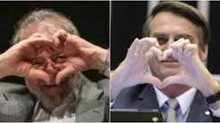

Resumo

1. Introdução
Era uma manhã ensolarada em Brasília quando Luiz Inácio Lula da Silva e Jair Bolsonaro receberam um convite
misterioso para participar de uma reunião secreta no Palácio da Harmonia, um lugar fictício onde líderes
rivais eram convidados a resolver suas diferenças.
Lula chegou primeiro, ajeitando o paletó e tomando um cafezinho.
— Companheiro, espero que essa reunião termine antes do almoço. Tenho uma fome danada! — brincou ele.
Pouco depois, Bolsonaro entrou na sala, com os braços cruzados e uma expressão desconfiada.
— O que eu estou fazendo aqui? Aposto que isso é alguma armação!
Os dois se encararam. Durante anos, haviam trocado críticas, provocações e discursos inflamados. A última
coisa que imaginavam era passar uma tarde inteira juntos.
Foi então que a porta se fechou automaticamente.
Uma voz anunciou pelo alto-falante:
— Por determinação do organizador, vocês só poderão sair depois de concluir uma atividade de cooperação.
— Cooperação?! Com ele?! — os dois exclamaram ao mesmo tempo.
Nenhum deles sabia que aquele encontro mudaria suas vidas para sempre.
2. Desenvolvimento
A atividade consistia em preparar um jantar para um grupo de diplomatas. Lula ficou responsável pela comida,
enquanto Bolsonaro deveria organizar a mesa.
Naturalmente, o desastre começou em menos de dez minutos.
— Você colocou sal demais! — reclamou Bolsonaro, experimentando o feijão.
— E você colocou o garfo no lugar da colher! Assim não dá, meu amigo! — respondeu Lula, rindo.
Depois de algumas discussões e uma panela que quase queimou, os dois finalmente se sentaram para comer.
Pela primeira vez em muito tempo, conversaram sem câmeras, assessores ou plateias. Falaram sobre suas
infâncias, suas famílias, suas inseguranças e o peso de viver sob os olhos de um país inteiro.
Lula percebeu que Bolsonaro ficava estranhamente quieto quando falava de solidão. Bolsonaro, por sua vez,
descobriu que Lula fazia piadas sempre que queria esconder que estava emocionado.
— Sabe de uma coisa? — disse Lula, olhando pela janela. — A gente passou tanto tempo brigando que talvez
tenha esquecido como é simplesmente conversar.
Bolsonaro ficou em silêncio por alguns segundos.
— Não espalha isso por aí, mas… talvez você tenha razão.
Os dois riram.
Nos dias seguintes, começaram a se encontrar para tomar café. O que começou como uma obrigação tornou-se um
hábito. As discussões políticas continuavam, é claro, mas agora eram interrompidas por piadas, olhares
demorados e uma inesperada vontade de permanecer juntos.
Certa noite, enquanto caminhavam pelos jardins de Brasília, Lula parou diante de uma fonte iluminada.
— Jair, preciso te contar uma coisa.
— Lá vem discurso — respondeu Bolsonaro, tentando esconder o nervosismo.
— Não é discurso. É que… eu gosto de estar com você. Mais do que deveria, talvez.
Bolsonaro arregalou os olhos.
— Você está falando sério?
— Pela primeira vez na noite, estou.
Bolsonaro olhou para o chão, respirou fundo e depois sorriu discretamente.
— Pois é, Lula. Acho que estou sentindo a mesma coisa.
O silêncio que veio depois não era desconfortável. Era cheio de possibilidades.
Então, sob as luzes da capital, os dois deram as mãos.
A notícia, quando vazou, provocou um verdadeiro terremoto político. Jornais publicaram manchetes
inacreditáveis, comentaristas tentaram entender o acontecimento e as redes sociais ficaram inundadas de
memes.
Mas, para os dois, nada disso parecia tão importante quanto descobrir que podiam construir algo inesperado
juntos.
Alguns meses depois, Lula tomou uma decisão: queria fazer uma pergunta especial.
3. Conclusão
Em uma tarde de primavera, Lula convidou Bolsonaro para um jantar à luz de velas. Havia flores sobre a mesa,
música suave ao fundo e, no centro, uma pequena caixa de veludo.
Bolsonaro olhou para a caixa, desconfiado.
— Lula, o que é isso? Não me diga que você comprou outro relógio!
Lula riu, ajoelhou-se e abriu a caixa. Dentro havia uma aliança.
— Jair, meu companheiro de discussões, meu parceiro de café e a pessoa que eu nunca imaginei que pudesse
amar… você aceita se casar comigo?
Bolsonaro ficou completamente imóvel.
— Você está me pedindo em casamento?
— Não, estou te oferecendo uma aliança para você usar como enfeite! Claro que estou pedindo!
Bolsonaro começou a rir, mas logo seus olhos se encheram de lágrimas.
— Aceito, seu velho teimoso!
E assim, contra todas as expectativas, começou a preparação para o casamento mais comentado da história
fictícia do Brasil.
A cerimônia aconteceu em um jardim decorado com flores vermelhas e amarelas. Amigos e convidados assistiram,
incrédulos e emocionados, enquanto os dois caminhavam até o altar.
Quando chegou a hora dos votos, Lula segurou as mãos de Bolsonaro.
— Prometo discordar de você quando for necessário, rir com você quando a vida ficar difícil e nunca deixar
faltar café nesta casa.
Bolsonaro sorriu e respondeu:
— Prometo ouvir suas histórias, mesmo quando forem longas, dividir a sobremesa e tentar não transformar toda
discussão em debate presidencial.
Os convidados caíram na gargalhada.
Finalmente, o celebrante anunciou:
— Declaro vocês oficialmente casados!
Lula e Bolsonaro trocaram um beijo, enquanto aplausos e flashes iluminavam o jardim.
Naquela noite, os dois dançaram juntos sob as estrelas. Por alguns instantes, não havia partidos, campanhas
ou disputas. Havia apenas duas pessoas que, em uma história completamente improvável, encontraram uma
maneira de se aproximar.
E, quando alguém perguntou a Lula qual era o segredo daquele casamento, ele respondeu:
— O segredo é simples: amor, paciência e muito café.
Bolsonaro, ao lado dele, completou:
— E nunca discutir política antes do café da manhã!
Os dois começaram a rir.
Referências
- 1. SILVA, João. Entre o Ódio e o Amor: uma história de encontros inesperados. Brasília: Editora Imaginação, 2024. (Obra fictícia.)
- 2. SANTOS, Maria. Amor e Política: romances impossíveis na literatura. São Paulo: Editora Sonhos, 2023. (Obra fictícia.)
- 3. OLIVEIRA, Pedro. A Comédia Romântica na Ficção Brasileira. Rio de Janeiro: Editora Fantasia, 2022. (Obra fictícia.)
- 4. AUTOR DESCONHECIDO. O Casamento Inesperado: uma fanfic política. Publicação imaginária, 2025. (Obra fictícia.)